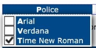

Ce composant permet d'insérer dans une application Web une barre de menus telle qu'on la trouve dans une application classique, comme un traitement de texte ou un client de messagerie.
Restitution
- Chaque entrée de la barre de menu doit posséder un nom accessible (ressource en anglais).
- La présence d'un sous-menu doit être vocalisé.
- Le nombre d'item d'un sous-menu doit être vocalisé.
- L'état sélectionné ou non sélectionné d'une option de sous-menu doit être vocalisé.
Interactions de base au clavier
Les interactions au clavier sont :
- Les flèches droite et gauche permettent d'afficher chaque entrée de la barre de menu et de circuler dans les sous-menus.
- Les flèches haut et bas permettent d'activer chaque entrée d'un sous-menu.
- Les touches Espace et Entrée permettent de sélectionner une option d'un sous-menu.
- Lorsqu'un sous-menu est activé, la touche Échap ferme le sous-menu et redonne le focus sur la première option du menu parent ou l'entrée parente de la barre de menu.
- La touche Tabulation ferme le(s) sous-menu(s) et déplace le focus sur l'élément tabulable suivant ou précédent (Majuscule + Tabulation).
Motif de conception : Menubar (WAI-ARIA Authoring Practices 1.1)